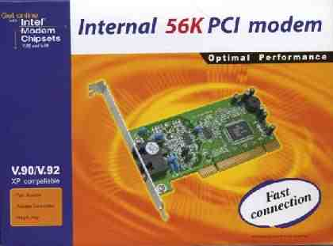
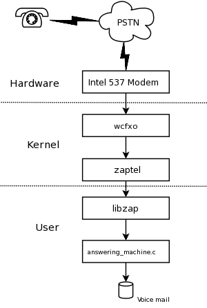

A $10 Linux Answering Machine
By Bob Smith

Introduction
Architecture of a Linux Telephone Interface
Install Drivers and Libraries
Select and Install the Softmodem
Next Steps ...
Introduction
This article describes how to build a Linux-based telephone answering machine using a low cost winmodem (softmodem) for the telephone interface. We describe how to install the drivers and libraries, and how to select and install the proper modem card. Our answering machine program is a couple of hundred lines of C code in a single file. If you've ever used a telephone you should have no trouble understanding the code.The requirements for the project are:
- An Intel 537-based modem (softmodem)
- A PCI slot that does not share interrupts
Intel 537-based modems are readily available for less than $10. The driver we are going to use requires the Intel chip, so be sure you have the right modem before starting.
Architecture of a Linux Telephone Interface
 Our answering machine uses drivers and libraries which are a part of the Asterisk open-source PBX. Asterisk can work as an answering machine, but Asterisk is huge and has a steep learning curve for installation and configuration. The uncompressed Asterisk package is over 16 megabytes, well in excess of our 5 kilobyte source file. The overall architecture of our answering machine is shown in the attached diagram.The driver for the modem card is the wcfxo module. This interfaces to a higher-level driver called "zaptel". The division of the driver into two pieces helps the Asterisk developers minimize how much code they need to write for new types of PC telephony interface cards. The zaptel driver delivers a 64 Kbps stream of mu-law samples to the user space application. Zaptel also has IO control routines (IOCTLs) to go on-hook, off-hook, and to indicate that the phone line is ringing. (VoIP Providers) The Zapata library (libzap) processes the 64 Kbps stream of data to extract caller ID and DTMF signals. The competence of libzap is why our answering machine application is so simple.
Our answering machine is pretty minimal as telephony applications go. It extracts and displays the caller ID information for incoming calls. If the phone rings more than four times, it answers the phone and plays a greeting. The greeting message asks the caller to press '1' to leave a message. Having the caller press a button eliminates messages from so called "bulk dialers". Voice mail is left as mu-law-encoded data in a file with the date and time encoded into the file name.
Install Drivers and Libraries
Our answering machine requires the zaptel drivers and the Zapata library, both of which are available from the Asterisk web site.
Installing the Drivers
Two drivers, wcfxo and zaptel, are required. Both are in the zaptel package. You can get to the package from the Downloads link on the Asterisk home page or you can get it directly from Digium which hosts the download site.
http://ftp.digium.com/pub/zaptel/zaptel-1.0.9.2.tar.gz
Untar the file, do a 'make linux26' and a 'make install' (as
root). If you are using udev, be sure to follow the directions in
README.udev. Specifically, you need to add the following lines to
your /etc/udev/rules.d/50-udev.rules file:
KERNEL="zapctl", NAME="zap/ctl"
KERNEL="zaptimer", NAME="zap/timer"
KERNEL="zapchannel", NAME="zap/channel"
KERNEL="zappseudo", NAME="zap/pseudo"
KERNEL="zap[0-9]*", NAME="zap/%n"
I run the answering machine as myself so I've added the following line to the udev permissions file (/etc/udev/permissions.d/00-udev.permissions):
zap/*:bobsmith:bobsmith:660
The final piece of zaptel configuration is to tell it that we have one interface to the telephone "central office". Edit /etc/zaptel.conf and add the following line to the end:
fxsks=1
If you don't live in the US, you should should make one other change to zaptel.conf. You need to uncomment the line with your country code and make that country code the defaultzone.
Installing the Zapata Library
The Zapata library is no longer used by Asterisk, so it has been relegated to the 'old' directory on the download site.
http://ftp.digium.com/pub/zaptel/old/zapata-0.9.1.tar.gz
Untar the file, do a 'make' and a 'make install' (as root). The Zapata library does not need any configuration.
Select and Install the Intel Modem
As mentioned above, you need to be sure to get an Intel 537-compatible modem. These modems should be easy to find and should be relatively inexpensive.
To call it a "modem" is not quite correct. It is really more of a "phone line interface". Its 64Kbps stream is 8000 bytes per second, which the wcfxo/zaptel driver delivers in 8 byte chunks. This means a thousand interrupts per second! It is the interrupt load that makes installing the modem card a little tricky. You need to install it in a PCI slot with an interrupt that is not shared by any other device. Check the documentation for your motherboard to find which interrupts are used for which slots and how those interrupts are used by the internal peripherals. If you are very unlucky, you may find that the interrupt for every slot on your motherboard is shared and used. You can try disabling internal peripherals but wcfxo just won't work on some motherboards.
The other, less common problem is that the wcfxo driver does not recognize your modem. To fix this you need to edit the wcfxo_pci_tbl table near the bottom of wcfxo.c in the zaptel build directory. Use 'lspci -nv' to get the needed vendor ID, product ID, and subsystem ID. The following vendor, product, and subsystem IDs are already recognized by wcfxo:
- e159:0001 8085 - e159:0001 8086 - e159:0001 8087
System Check-out
If you've completed the hardware and software installation, you can verify your system with a few commands. Install the modules and examine the resulting syslog output.
#modprobe zaptel
#modprobe wcfxo
#tail /var/log/messages
Sep 18 23:30:41 kernel: Zapata Telephony Interface Registered on major 196
Sep 18 23:30:51 kernel: PCI: Found IRQ 5 for device 0000:00:0b.0
Sep 18 23:30:51 kernel: PCI: Sharing IRQ 5 with 0000:00:07.5
Sep 18 23:30:51 kernel: wcfxo: DAA mode is 'FCC'
Sep 18 23:30:51 kernel: Found a Wildcard FXO: Generic Clone
Sep 18 23:30:51 kernel: Registered tone zone 0 (United States / North America)
Don't worry about the "Sharing IRQ 5" log message. This reports
that the IRQ can be shared but does not imply that another Linux
device is using it. An lsmod should show the following three
modules:
# lsmod
Module Size Used by
wcfxo 10848 0
zaptel 185572 3 wcfxo
crc-ccitt 1664 1 zaptel
Verify that the wcfxo driver is generating a thousand interrupts per second and that it is not shared with any other devices:
cat /proc/interrupts; sleep 10; cat /proc/interrupts
The wcfxo entry in /proc/interrupts should be on a line by itself, and the interrupt count should have gone up by ten thousand during the above 10 second sleep. If wcfxo is not on a line by itself, you need to move the modem to another PCI slot. Specifically, you want something like this:
5: 3003856 XT-PIC wcfxo
not something like this:
9: 0 XT-PIC uhci_hcd, uhci_hcd, wcfxo
The zaptel driver includes a utility to view the driver
configuration. Use it to verify that it has one interface. If this
fails, check the fxsks=1 line in the configuration file.
# ztcfg -v
Zaptel Configuration
======================
1 channels configured.
Installation and Use of the Answering Machine
The code for the answering machine is in a single C file which is available here. Compile the program with the command:
gcc -lzap -o answering_machine answering_machine.c
Run the program with the command:
./answering_machine
The program expects to find an 8 KHz mu-law-encoded greeting message called "leave_a_msg.ul" in the working directory. You can record the greeting using any tool you like and then convert the WAV file to mu-law using sox. The command is:
sox leave_a_msg.wav leave_a_msg.ul
Sox interprets files with the .ul extension as mu-law-encoded audio at 8 KHz. You can hear your voice mail by using the play command. For example:
play 2005_09_22_13_30_22.ul
Code Review of the Answering Machine
The hard work in the answering machine is done by the Zapata library. It does the caller ID, DTMF tone detection, and reads and writes mu-law audio files. Here is the skeleton of the code in the answering machine:
zp = zap_open("/dev/zap/1", 0);
while (1) {
/* Wait for a ring and get caller ID info */
zap_clid(zp, cidnumber, cidname);
{ Display caller ID to user. Do logs or black list checking here. }
/* Wait for an additional RINGS-1 rings before answering */
zap_waitcall(zp, (RINGS - 1), ZAP_OFFHOOK, TM_OUT/1000);
/* Tell Zapata that we want DTMF digits */
zap_digitmode(zp, ZAP_DTMF) && zap_clrdtmf(zp);
/* Play our outgoing message. Abort on DTMF or hang-up. */
zap_playf(zp, "leave_a_msg.ul", ZAP_DTMFINT | ZAP_HOOKEXIT);
{ Continue if caller hung up }
/* Wait up to TM_OUT ms for the caller to enter a DTMF digit */
zap_getdtmf(zp, 1, (char *)0, 0, 0, TM_OUT, ZAP_HOOKEXIT);
{ Hang-up/continue if time-out and no DTMF digit. }
/* Get the DTMF digit the caller entered. Hang-up if wrong digit */
pDigits = zap_dtmfbuf(zp);
{ Hang-up/continue if caller entered wrong digit }
/* Save voice mail to 'date_time' file. */
zap_recf(zp, date_time, 0, ZAP_BEEPTONE | ZAP_SILENCEINT);
/* Done with message. Hang-up and wait for next call. */
zap_sethook(zp, ZAP_ONHOOK);
}
}
The above code should give you a feel for how to write telephony applications using the Zapata library. The library also has routines that you can use to make outgoing calls and to help make conference calls.
Next Steps...
For a simple answering machine, this program works surprisingly well. Its simplicity is its best feature.
If we were to add features to the answering machine, we would probably add:
- Remote access to voice mail: We should be able to retrieve our voice mail over a phone line. Saving to a file at least gives us some remote access. Still...
- Caller ID routing: The call would be routed based on the phone number of the caller. Some callers would go directly to voice mail.
- Capture outgoing calls: The answering machine should be able to log the number dialed and duration of outgoing calls.
- In-Progress call recording: Wouldn't it be handy to be able to press a button and have your current call recorded. This would be a more reliable way to take notes during a call. Of course you'd want to tell the other person that you are recording the call and you'd want the machine to play a beep every 10 seconds or so.
- A web interface: It might be nice to have a web interface to configure the answering machine. Something like the Run Time Access library might help. (See http://www.runtimeaccess.com)
- Email delivery of voice mail: We could convert the mu-law voice mail files to WAV and have the voice mail emailed to us.
- Pager or message forwarding: Use libzap's ability to dial out to tell a pager that there is a new message, or have the application call your cell phone and play the voice mail.
The Zapata library uses blocking IO, making it a little
difficult to use a select() loop to manage a user interface while
waiting for incoming calls. Perhaps a threaded application could
step around this problem.
![[BIO]](../gx/authors/smith.jpg)
Bob is an electronics hobbyist and Linux programmer. He is one of the authors of "Linux Appliance Design" to be published by No Starch Press.